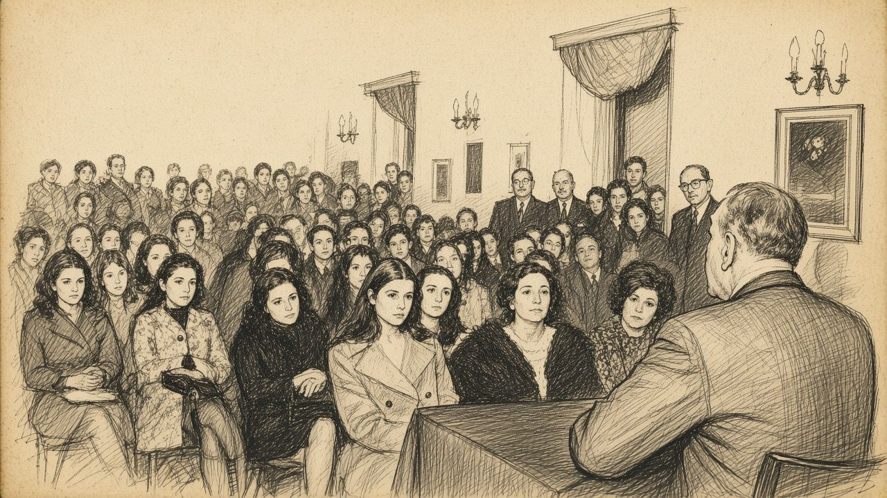

Jorge Luis Borges · 1899–1986
La Biblioteca OralThe Oral Library
Un catálogo de las conferencias que Borges dictó, ya casi ciego, entre Harvard y Buenos Aires.A catalog of the lectures Borges gave, nearly blind, between Harvard and Buenos Aires.

Catálogo Catalog
Ningún volumen responde a esa búsqueda. Quizá exista en otro hexágono.No volume matches. Perhaps it lives in another hexagon.
Tres ciclos · Three cycles
ColeccionesCollections
Nota del bibliotecario · Librarian's note
AcercaAbout
Este sitio es un índice, no un depósito. Reúne fechas, lugares, resúmenes propios y enlaces a fuentes públicas donde leer o escuchar cada conferencia.
This site is an index, not a repository. It gathers dates, venues, original summaries and links to public sources where each lecture can be read or heard.
Derechos Rights
Borges murió en 1986: sus textos y grabaciones siguen protegidos. Aquí solo hay citas breves. Los textos completos y los audios pueden agregarse en data/lectures.js (campos fullText y audioSrc) cuando se cuente con los derechos.
Borges died in 1986; his texts and recordings remain under copyright. Only brief quotations appear here. Full texts and audio can be added in data/lectures.js (fullText and audioSrc) once the rights are secured.
Fuentes de las fechas Sources for dates
Las fechas de Borges oral y Siete noches provienen de las notas de las ediciones originales y de la bibliografía del Borges Center (Universidad de Pittsburgh). De las Norton Lectures solo se indica el día exacto de la primera; las demás figuran como 1967–1968.
Dates for Borges oral and Siete noches come from the first editions' notes and the Borges Center bibliography (University of Pittsburgh). For the Norton Lectures only the first has an exact day here; the rest are listed as 1967–1968.